Coding Projects
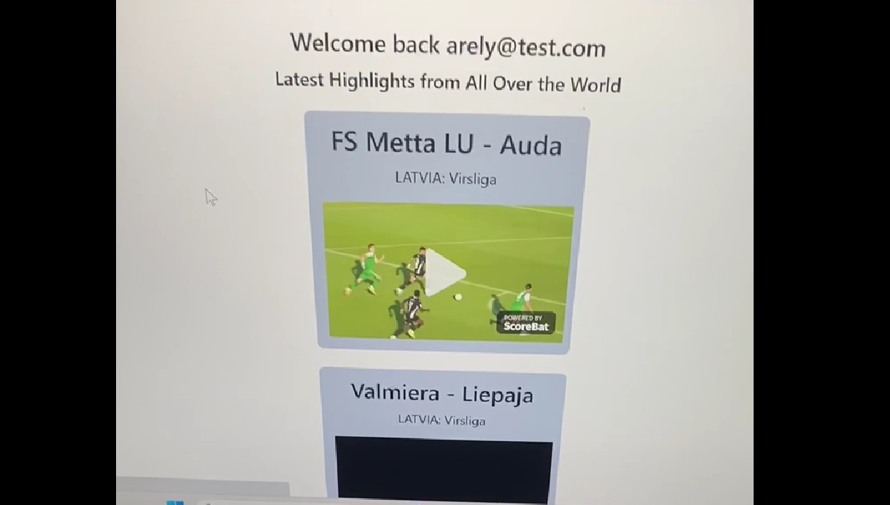June 2023: This is the first full stack project I have done so far. I created a soccer app that provides the most recent highlights and live scores from global leagues, and detailed standings and recent news from a few soccer leagues. I searched for APIs that have information about recent matches, standings, highlights, and stats and it was easier to find APIs for soccer that matched the majority of the project’s requirements. I then brainstormed the UI and used React to build out the components which consisted of the home page, live scores section, navbar, league details page (which was a dynamic component that displayed a specific league’s standings and recent news), and an authentication component for users to log in or sign up. I used Node.js and Express to manage the API requests and authentication. Since I used different APIs, I learned how to integrate them in different ways depending if it required a key. My project provided me a deeper understanding of how front-end and back-end communicated with each other, especially with API requests. It has not only expanded my technical skills but it instilled a passion for continuous learning and improvement. You can check out the project's repo here.
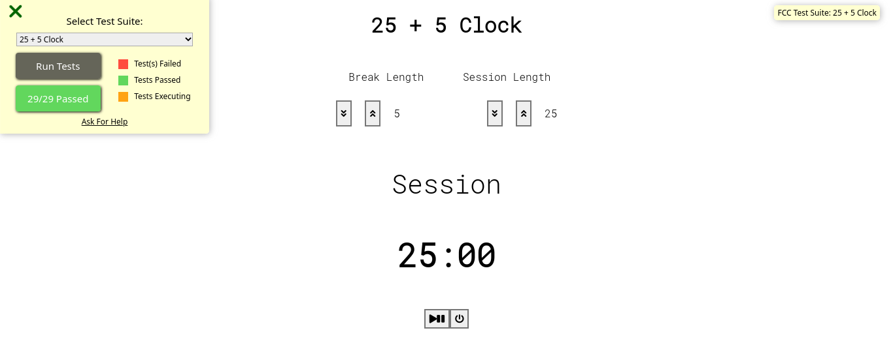June 2023: This was the last project I had to complete for the Front End Development Libraries Certification. For this project, I decided to utiltize React hooks as a means to enhance my skills and gain practical experience in React. By using React hooks, I aimed to deepen my understanding of functional components and explore the benefits they offer. Hooks provide a more flexible approach to managing component state and lifecycle, allowing for cleaner and more reusable code. I wanted to familiarize myself with this modern approach and understand its potential in solving complex state management scenarios.
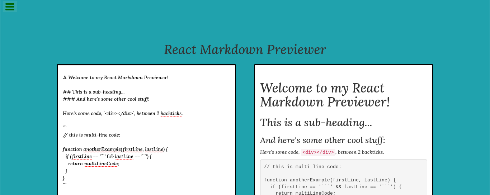April 2023: This project was completed as part of the Front End Development Libraries Certification. It allowed me to apply my knowledge of React and further develop my skills in building user-friendly interfaces. Users type in Markdown syntax in one text box and immediately see a preview of the rendered output in another box through the Marked library.
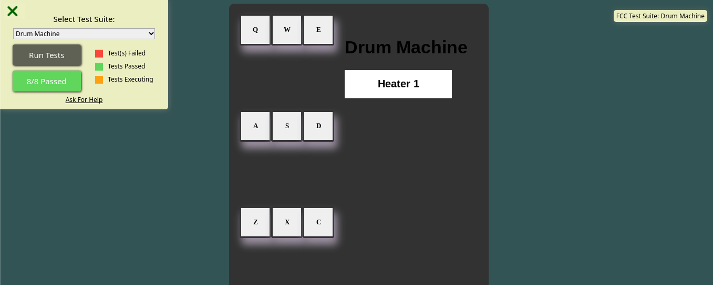December 2022: This is another project for the Front End Development Libraries Certification. I used ReactJS for this project. I created a class component to create the program. For this project, I created a 3 x 3 grid for the drum pad elements that will stay close to each other but when I checked it in full screen on my laptop, the elements were spread out. Despite my efforts to fix the issue, I was not able to find a solution within the given timeframe. This is something that I would like to continue to work on and improve in the future.
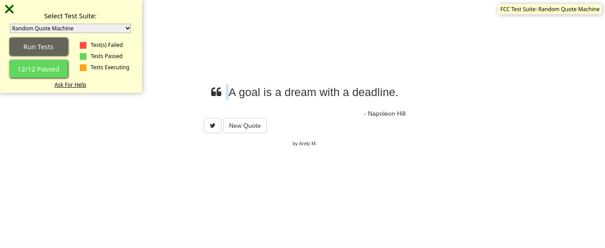October 2022: This is the first project for the Front End Development Libraries Certification. I used vanilla JavaScript to do this project. I drew inspiration from the freeCodeCamp example while creating this project, and incorporated my own ideas and improvements to create something new. I integrated an API to have a large pool of quotes for users and there is a new quote button for the user to click on to generate a new quote.
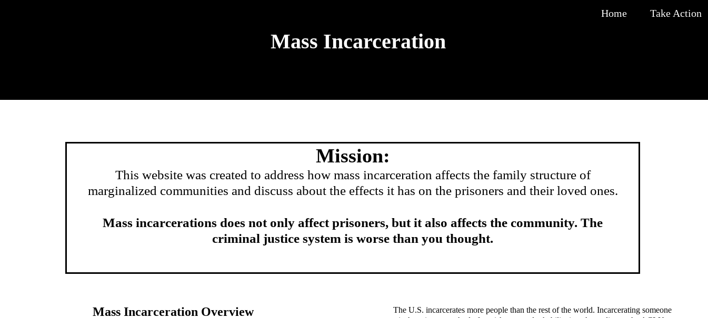August 2022: I made another activist website to addressed how mass incarceration has not only prisoners but also family structures. On the home page, I provided information about the demographics of the prisoners in the US. I then go into depth why they are in jail and how it is a problem to the prisoners. On the take action section, I provided links to excerpts of readings to learn more about how it affected people outside of prison as well. Some of the excerpts include how prisons represented problems in society produced by racism and how people stood up to that issue. Other excerpts have stories of former prisoners and how their families wera affected during that time. Lastly, I provided a script below the excerpts for visiters if they want to contact their senator to take action.
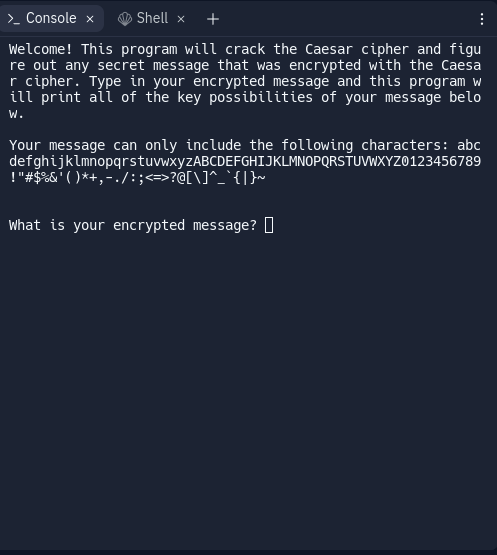July 2022: This Python program was made to crack the Caesar's Cipher. This was the final project I had to make in the Intro to Cryptography course. The user inputs an encrypted message, and the program prints out all the possible decoded messages by shifting the letters the appropriate number of places. The program can decode messages that contain uppercase and lowercase letters, numbers, and a variety of special characters.
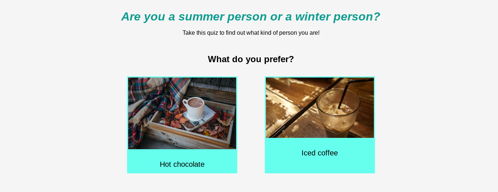July 25, 2022: I decided to make another personality quiz this year because I felt that I could make a better quiz than the previous one. I mainly wanted to work on the design on the quiz and add some extensions to the quiz. This quiz is about if you're a summer person or a winter person.
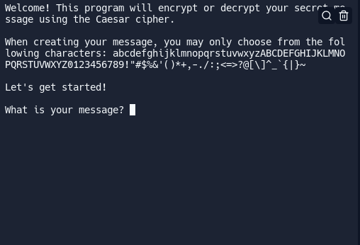July 2022: This is a continuation of the Programming Caesar's Cipher project. I added more characters users can write in their secret message. Instead of being limited with uppercase letters, they can also use lowercase letters and symbols.
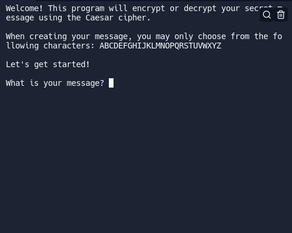July 2022: This program encrypts and decrypts messages that users send. I made this program while taking the Intro to Cryptography from Girls Who Code Self Paced Program. This was the first project for the course.
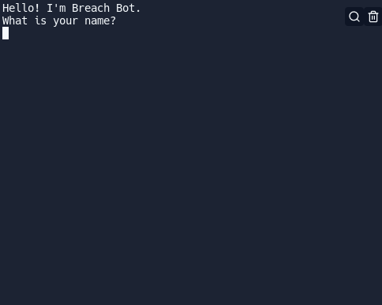July 2022: Breach Bot is a bot that informs users about Facebook's data breach in 2019. Users can learn about the breach's details, Facebook's response, and my opinion about the breach. I also made an extension to this project by prompting the user if they want to learn more about the CIA Triad in case they get confused while reading my reflection. This was the final project for the Intro to Cybersecurity course. If you're seeing this from your laptop and you want to see the extension, click on the left image. However, if you're seeing this from your phone and you want to see the extension, click on the top image.
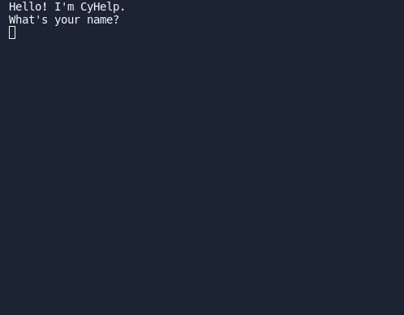July 2022: CyHelp is a chatbot that informs users about the everyday use of cybersecurity and the CIA Triad, which is a model of how we protect data. This was made while I was taking the Intro to Cybersecurity course from Girls Who Code Self-Paced Program.
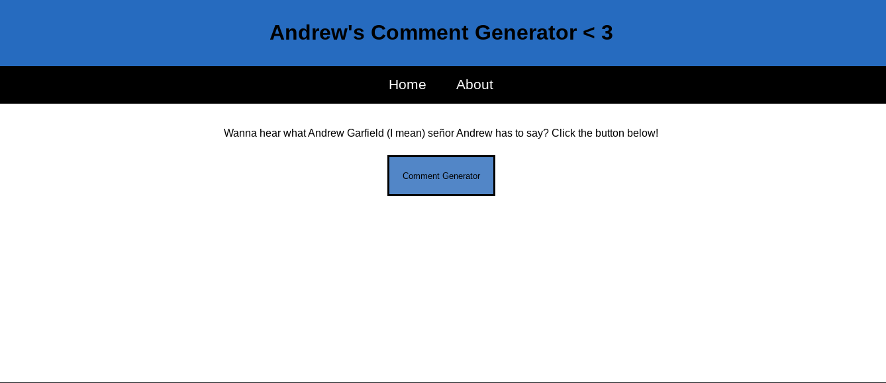January 27, 2022: I made another comment generator for my friend Andrew. He's a bit different from Carl in terms of his sense of humor. The purpose of the comment generators is to showcase their personalities. I hope I can make another comment generator in the upcoming months.
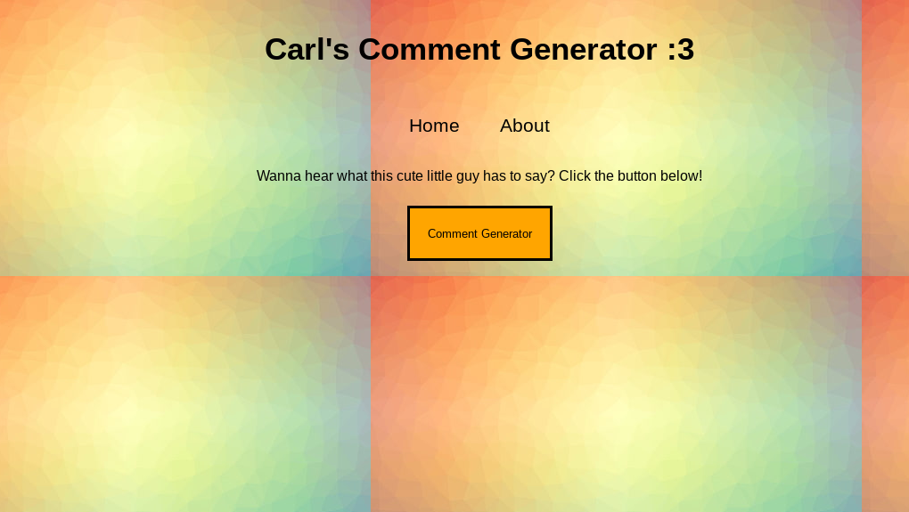January 20, 2022: I made a comment generator for my best friend Carl. These comments were found on many streams, and I made a list of some comments he made. The comment generator was inspired by a fairy comment generator a group of Barnard students made. I thought it wasn't hard because the comment generator is similar to the fact generator I made in the activist website. You can learn more about this project by clicking on the image.

August 2021: This activist website is about informing the public about the reasons why immigrants come into the country, and the psychological effects immigration centers has on the children. This was also made when I was on the program.
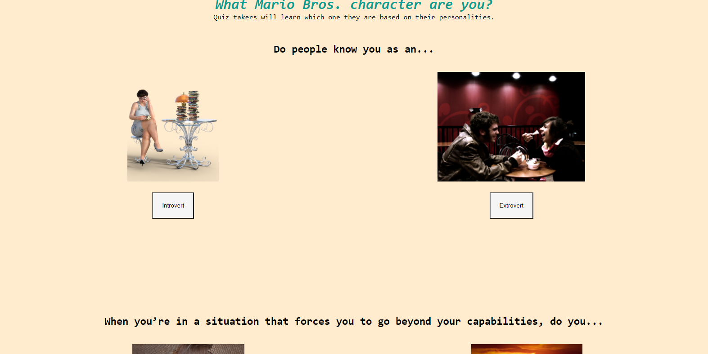August 2021: I made this personality quiz while I was on the Girls Who Code Summer Immersion Program. It was very fun making the quiz. I'm planning to make another personality quiz this year. In the meantime, if you want to find out what Mario Bros. character are you, take the quiz.